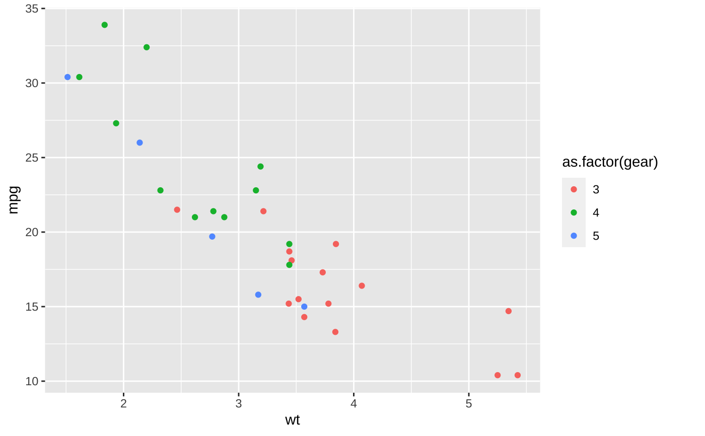
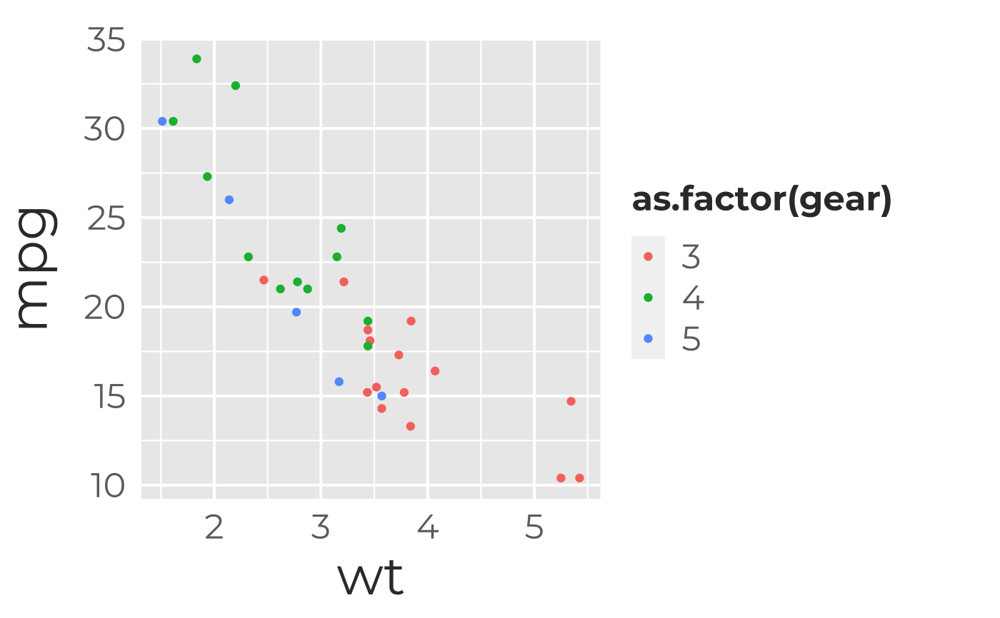
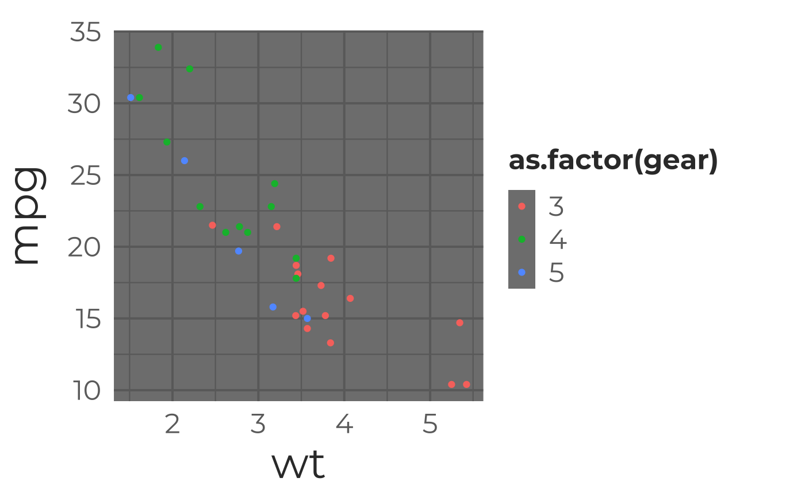
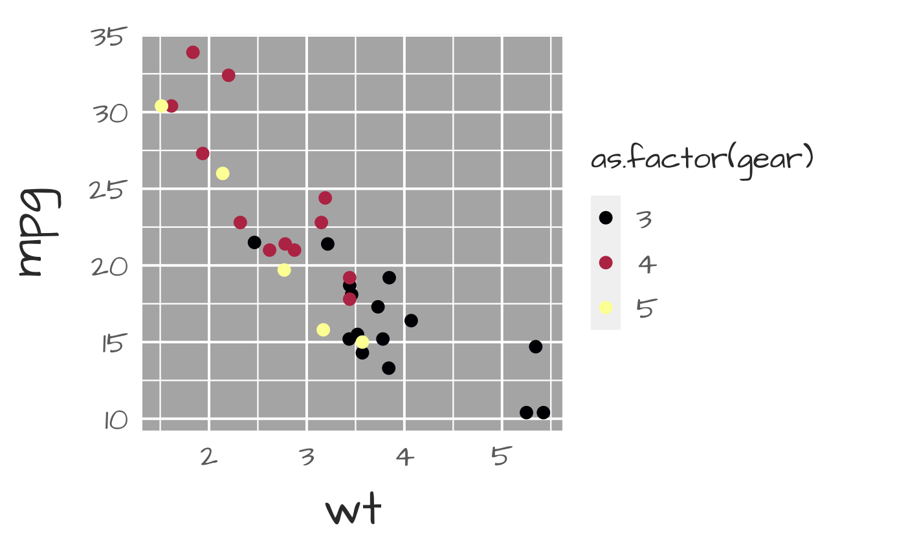
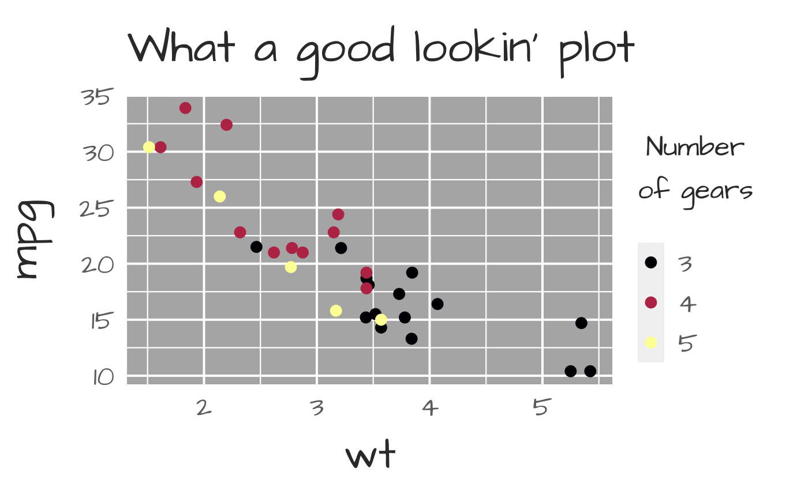
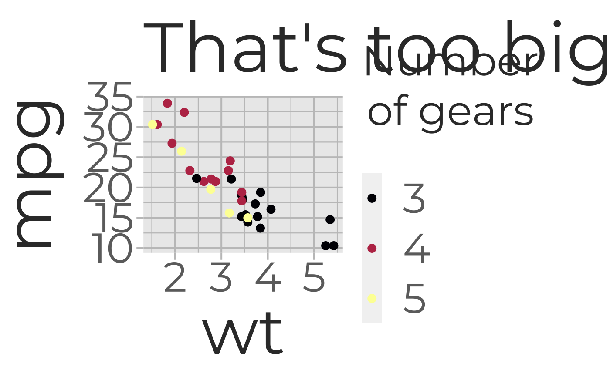
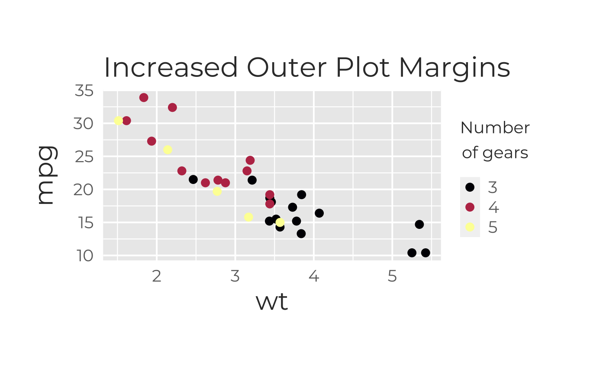

theme_galactic.RdA ggplot2 theme for Galactic Polymath styling. Sensible defaults for plots intended for presentations and worksheets. (Large text, thick grid lines, etc.)
theme_galactic( base.theme = "gray", grid.wt.maj = 0.7, grid.wt.min = 0.4, grid.col = NA, border.wt = 1, border.col = "#6D6D6D", font = "Montserrat", regular.wt = 400, bold.wt = 700, text.cex = 1, font.face = 1, title.col = "#363636", axis.lab.col = "#363636", axis.text.col = "#6D6D6D", axis.tick.length = 6, pad.title = 5, pad.xlab = 5, pad.ylab = 12, pad.legend = 5, pad.outer = c(20, 20, 5, 20) )
| base.theme | ggplot2 base theme to be modified; default="gray"; other options are "bw","light","linedraw", "dark","minimal","classic" and "void" as listed in this gallery |
|---|---|
| grid.wt.maj | How heavy do you want grid lines to be? (in case printer makes things lighter); default=.8 |
| grid.wt.min | How heavy do you want grid lines to be? (in case printer makes things lighter); default=.6 |
| grid.col | What color do you want the grid to be? Default: NA (maintain base theme); options are "gp_gray" or any custom color |
| border.wt | How heavy do you want the plot border to be? |
| border.col | Color of plot border. Default: same as font (#363636) |
| font | Google font to use, "Montserrat" by default; see options with sysfonts::font_families_google() or the Google font gallery |
| regular.wt | font weight for regular font style |
| bold.wt | font weight for bold text |
| text.cex | Controls size of text; if a single value, a simple multiplier for scaling all text; if 4 values, a multiplier for title, axis labels, axis values, and legend title; default=1 (don't rescale font sizes) |
| font.face | style of axis label and title fonts; 1=plain, 2= bold, 3=italic, 4=bold+italic; Provide 1 value for all or 3 values for title, x-axis label, y-axis label (in that order); default= 1 (plain) |
| axis.lab.col | color of axis labels (and title) |
| axis.text.col | color of axis text (numbers, dates, etc) |
| axis.tick.length | length of axis ticks (in pt units) |
| plot.margin | set plot margins; default= margin(t=20,r=20,b=5,l=20) |
#add ggplot themeing (intended to look good and be readable by #data novices in printed & projected formats) g+theme_galactic()#change the base theme g+theme_galactic(base.theme="dark")#doesn't look great, let's change the palette to a color-blind-friendly Viridis theme (and the font while we're at it) (g2 <- g+theme_galactic(base.theme="dark",font="Architects Daughter" )+ scale_colour_viridis_d(option="C"))#let's add a title and change the legend title (g3 <- g2+ labs(title="What a good lookin' plot", col=expression(atop("Number","of gears")),parse=TRUE))#Make all the text bigger with one multiplier (useful for quickly scaling #for a different output size) g3+theme_galactic(text.cex=2,grid.col="gp_gray")# Note we lost all our customizations because we overwrote our theme. #Add more space to the right side of the margin g3+theme_galactic(text.cex=0.8,pad.outer=c(50,40,50,30))+ggtitle("Changed Outer Plot Margins")# Change the size of each type of text g3+theme_galactic(text.cex=c(0.8,1.1,0.5,1.2))+ggtitle("Custom Text Sizing")